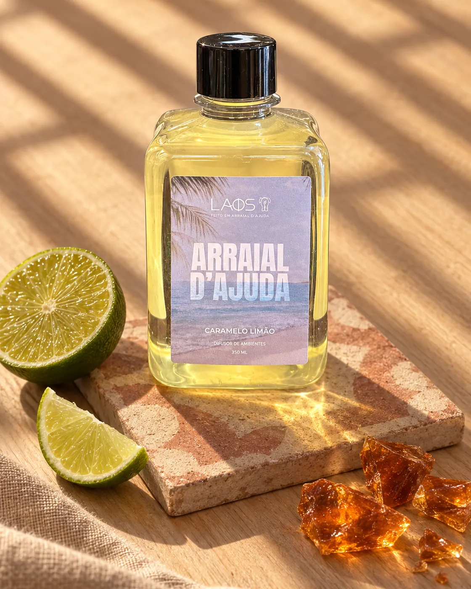
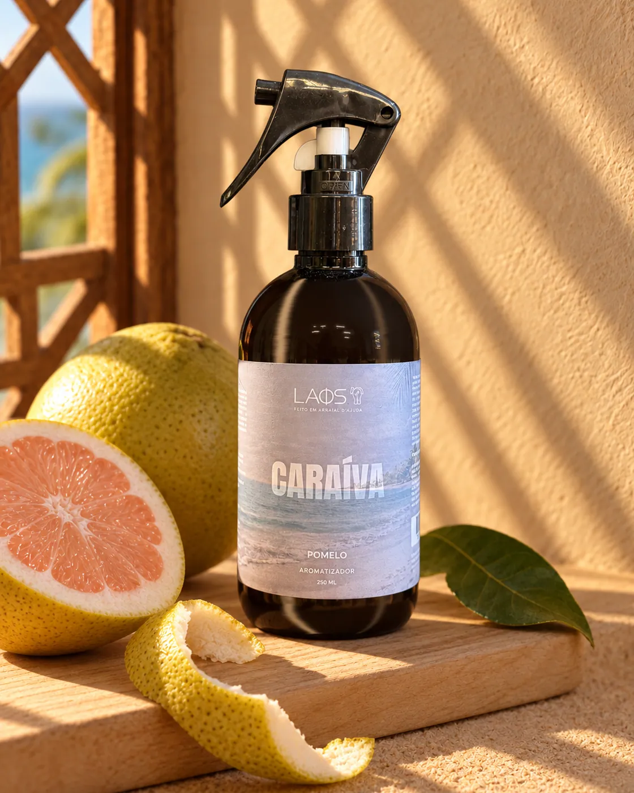
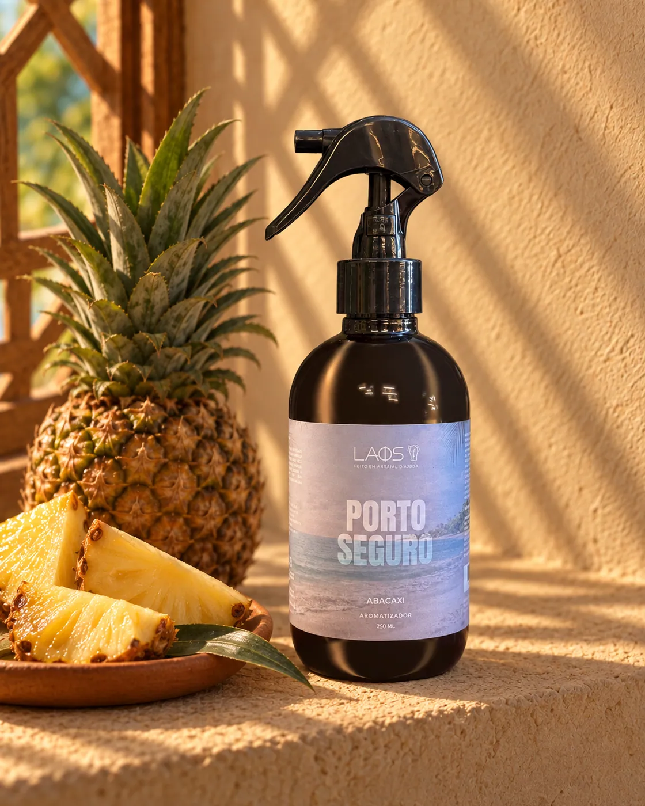

Atlas de aromas
Leve um lugar para casa
Nossos aromas começam na Costa do Descobrimento, onde ficam as nossas lojas, e viajam pelo Brasil e pelo mundo.
Bahia
A Costa do Descobrimento, onde a LAOS nasceu e tem as suas lojas.

16°29′S 39°04′OArraial d'Ajuda
A vila no alto da falésia, com a igrejinha branca na praça e a ladeira que desce até o mar. É aqui que ficam as nossas duas lojas.
4 produtos
16°48′S 39°09′OCaraíva
A vila sem carros entre o rio e o mar, onde se chega de canoa, atravessando o rio Caraíva.
2 produtos
16°27′S 39°04′OPorto Seguro
A cidade da Costa do Descobrimento, com o centro histórico no alto e a orla de praias logo abaixo.
2 produtos 16°35′S 39°06′O
16°35′S 39°06′OTrancoso
O Quadrado: um gramado comprido entre casinhas coloridas, com a igreja de São João Batista de frente para o mar.
2 produtosBrasil
De norte a sul, aromas com sotaque.

Amazônia
A maior floresta tropical do planeta, de rios largos e verde sem fim.
2 produtos
Nordeste
Sol forte, fruta madura e rede na varanda.
1 produto
Rio de Janeiro
Entre o morro e o mar, o Rio do fim de tarde na praia.
1 produto
Rio Grande do Sul
O Sul do pampa, das serras e das noites frias.
1 produto
São Paulo
A cidade acesa depois da meia-noite, dos bares de esquina às avenidas.
1 produtoMundo
Cidades de longe, para lembrar de uma viagem ou sonhar com a próxima.

Cairo
Às margens do Nilo, a cidade dos bazares, com as pirâmides de Gizé logo ao lado.
1 produto
Capri
A ilha de falésias e mar azul no golfo de Nápoles.
1 produto
Dubai
Deserto, especiarias e torres de vidro à beira do golfo.
1 produto 35°00′N 135°46′L
35°00′N 135°46′LKyoto
Templos de madeira, jardins de musgo e bambuzais.
2 produtos
Miami
Prédios art déco, palmeiras e o mar morno da Flórida.
1 produto
Moscou
Cúpulas coloridas e invernos longos.
1 produto
Paris
Boulevards, cafés de esquina e o Sena atravessando a cidade.
2 produtos
Praga
Pontes de pedra sobre o rio Moldava e telhados de conto de fadas.
1 produto